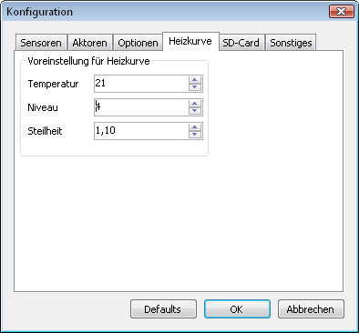

Voraussetzung für die Installation des Programms auf einem
Windows-System ist das .NET Framework 4.0. Falls es noch nicht auf
dem Rechner installiert ist, kann das .NET Framework 4.0 von der
Microsoft-Seite kostenfrei heruntergeladen
werden.
http://www.microsoft.com/netframework/
Das
.NET Framework ist zuerst zu installieren. Danach erfolgt die
Installation des Programms mit der Datei SolvisSC2.msi (Doppelklick
im Explorer). Das Programm ist jetzt im Programmverzeichnis
%ProgramFiles%\Solvis\SolvisSC2 installiert. Über das Startmenu
Programme\SolvisSC2 kann das Programm aufgerufen werden.
Über den Menupunkt „Extras->Konfiguration“ kann das Programm für den Benutzer eingestellt werden. Für die Logdaten-Anzeige können die Texte, Tooltip, Farbe und Sichtbarkeit der Sensoren, Aktoren und Optionen angepasst werden. Hierzu wählt man zuerst den passenden Tabulator an (Sensoren, Aktoren, Optionen). Auf der linken Seite muss dann der zu ändernde Sensor, Aktor oder Option angewählt werden. Dann können für dieses angewählte Element die Werte verändert werden. Allerdings ist es bei den Optionen nicht empfehlenswert die Texte zu verändern, da bei den Optionen eine im Programm festgelegte Funktion dahintersteht (Ausnahme: Freie Formeln). Bei einigen Optionen können die relevanten Parameter eingestellt werden. Diese Parameter werden in dem zusätzlichen Dialogfenster nach dem Betätigen von „OK“ direkt übernommen
Beispiel für Sensor S04:
Beispiel für Option P04:

Unter dem Tabulator „Heizkurve“ können die Grundwerte für das Fenster eingestellt werden, welches über Extras->Heizkurve aufgerufen wird.

Unter dem Tabulator „SD-Card“ können die Grundwerte für das Zeitplan Fenster eingestellt werden, welches über Extras->SD-Card Infos->Zeitplan aufgerufen wird. Das Dateiverzeichnis muss auf ein Verzeichnis gesetzt werden, in dem sich die Dateien zeitplan.txt, zaehlst.txt und paramact.txt befinden.

Unter dem Tabulator „Sonstiges“ kann die SolvisControl Version der Regler-Baugruppe eingestellt werden (erster Zahlenwert in der Versionsbezeichnung). Bei Werten kleiner als 132 ist der Dateityp für Logdateien „so*.txt“ vorausgewählt. Bei Werten ab 132 ist der Dateityp für Logdateien „mi*.txt“ vorausgewählt. Unabhängig von der eingestellten Version können sowohl „so*.txt“ als auch „mi*.txt“ ausgewählt werden.

Mit dem „Defaults“-Schalter werden die im Programm
festgelegten Grundwerte aktiviert.
Die meisten Änderungen
der Konfiguration sind sofort wirksam nach Betätigen des
OK-Schalter.
Nach dem Beenden des Programms wird eine
Konfigurationsdatei (User.config) angelegt. Der Pfad für die
User.config ist unterschiedlich bei verschiedenen Betriebssystemen.
Unter Windows XP lautet der Pfad „Dokumente und
Einstellungen\<UserName>\Anwendungsdaten\Solvis\SolvisViewer“.
Unter Windows Vista, Windows 7, ... lautet der Pfad
„User\<UserName>\AppData\Roaming\Solvis\SolvisViewer“.
Die
User.config ist eine Xml-Datei. Alternativ kann auch diese Datei mit
einem Xml-Editor oder einem normalen (UTF8 fähigen) Texteditor
bearbeitet werden.Über die Xml-Datei können Text, ToolTip,
Aktivierzustand (Checked), Sichtbarkeit (Visible), Farbe (ColorRGB)
der Sensoren S01 bis S24, der Aktoren A01 bis A20 und den Optionen
P01 bis P08 angepasst werden.
Checked und Visible können auf
die Werte „true“ oder „false“ gesetzt werden.
Bei ColorRGB wird ein RGB-Wert (Rot, Grün, Blau-Anteil)
eingestellt. Jeder der drei durch Komma getrennten Werte kann im
Bereich 0 bis 255 liegen. Der Wert 0,0,0 entspricht Schwarz,
255,255,255 entspricht Weiß.
Im Xml-Tag „OpenDir“ ist der Pfad für das Öffnen
der Solvis-Logdatei hinterlegt.
Im Xml-Tag „Version“
ist die aktuelle Programmversion hinterlegt.
In BurnerMinPower
(Brenner minimale Leistung) und BurnerMaxPower (Brenner maximale
Leistung) können die Werte für den Brenner eingestellt
werden.
In Latitude und Longitude können die eigenen geografischen Koordinaten eingestellt werden für die Darstellung des Sonnenstands.
In Temperature, Niveau und Gradient werden die Startwerte für
die Heizkurve eingestellt.
Temperature darf nur ganzzahlig im
Bereich 12 bis 28,
Niveau darf nur ganzzahlig im Bereich -5 bis
+5,
Gradient darf nur in 0.05 Schritten im Bereich 0.50 bis
2.00
vorgegeben werden.
In TemperatureVL, NiveauVL und GradientVL werden die Werte der Heizungs-Anlage eingestellt. Diese Werte dienen der Bestimmung der Abweichung von der Vorlauftemperatur des ersten Heizkreises.
Achtung: Die Werte mit
Nachkommastellen müssen in der User.config Datei mit einem Punkt
eingegeben werden (z.B. 7.5).
Bei Falscheingabe wird eine Datei
StackTrace.txt im oben genannten Verzeichnis erzeugt.
Beim jedem neuen Programmstart werden die aktuellen Werte aus der User.config Datei verwendet.
Xml-Editor: z.B. Xml Notepad 2007 von Microsoft
http://www.microsoft.com/download/en/details.aspx?id=7973
Durch Anwählen des Menupunkts Extras/Heizkurve wird ein neues Fenster geöffnet für die Darstellung von drei parametrierbaren Heizkurven. Hierbei zeigen die ersten beiden Kurven (Curve1 und Curve2) den echten von Solvis realisierten Verlauf der Heizkurve. Der Verlauf ist geprägt durch eine Rundung auf ganze Grad für die Vorlauf-Temperatur. Man sieht aber auch deutlich den Versatz bei negativen Außentemperaturen. Die dritte Kurve zeigt einen idealisierten Verlauf der Kurve (Ideal), wie sie in der Solvis Beschreibung L30 dargestellt ist. Für alle Kurven kann die Raum-Solltemperatur (Temperature) (Display Heizkreis-Menu, Seite 3), Steilheit (Gradient) (Heizkreis-Menu, Seite 2) und Niveau (Thermometersymbol im Heizungs-Menu) vorgegeben werden.
Anmerkung des Verfassers: <Den Parameter „Niveau“
hätte ich auch im Heizkreis-Menu erwartet. Das Thermometer
Symbol wäre nur zur (additiven) Feinregulierung des „Niveaus“
notwendig.
Aber es gibt zumindest eine getrennte Einstellung des
„Niveaus“ für jeden Heizkreis über das
Thermometer Symbol im Heizungs-Menu.>
Durch Variation der im unteren Teil des Fensters verfügbaren Parameter wird der Einfluss in der Heizkurve grafisch sichtbar gemacht. Somit kann man relativ leicht beurteilen, wie sich die Änderungen von Parametern auswirken. Über den Menupunkt „Drucken“ kann eine Druckvorschau (PrintPreview) oder ein Druck (Print) ausgelöst werden.
Mit dem Menupunkt „Konfiguration“ können die
Berechnungsverfahren der Kurven verändert werden. Der obere Teil
in dem aufgeklappten Menu ist für die Kurve1 (Curve1), während
der untere Teil für die Kurve2 zuständig ist. Ohne Anwahl
einer der Menupunkte wird der Originalverlauf der SolvisControl 2
dargestellt.
Mit dem Aktivieren von „floor“, „round“
oder „nicht gerundet“ für Curve1 bzw. Curve2 wird
die bei Solvis verwendete Formel mit unterschiedlichen
Rundungsverfahren dargestellt. Der Verfasser ist der Meinung, dass
die alternativen Berechnungs-Modelle besser geeignet wären für
die Bestimmung der Heizkurve und der Idealkurve am nächsten
kämen, wenn man die Mischer-Steuerung mit ganzen Grad-Zahlen
durchführen muss. Nach eigenen Beobachtungen kämen die
„round“ oder „nicht gerundet“ Formel der
Realität am nächsten. Zusätzlich müsste nach
Ansicht des Verfassers aber auch eine Betrachtung über VL Ist
und VL Soll über einen angemessenen Zeitraum in der
„SolvisControl 2“ stattfinden. Die aufgetretenen
Abweichungen in dem zugrunde liegenden Zeitraum könnte die
„SolvisControl 2“ durch zusätzlichen Eingriff
in die Mischer-Steuerung korrigieren.
Die zugrunde liegende Basis-Formel lautet:
VL = k1 * G * (RT –
AT)**k2 + RT + N
Hierbei sind
VL = Vorlauftemperatur
k1, k2
= Konstanten
G = Gradient oder Steilheit
RT = Raumtemperatur
AT
= Außentemperatur
N = Niveau
k1 wurde mit dem Wert 1.8207
und k2 mit 0.8 angenommen. Die tatsächlichen Werte, die Solvis
verwendet hat, können geringfügig abweichen.
Floor-Formel: VL = (int)(k1 * G * pow(RT – floor(AT), k2) + RT + N);
Round-Formel: VL = round(k1 * G * pow(RT – round(AT * 2) /
2, k2) + RT + N);
Hinweis: Die Round-Formel rundet auf halbe Grad
für die Außentemperatur.
nicht gerundet-Formel: VL = round(k1 * G * pow(RT – AT, k2) + RT + N);
wahrscheinliche Solvis-Formel: VL = (int)(k1 * G * pow(RT –
(int)(AT), k2) + RT + N);
Da round keine Standardfunktion in
der C-Bibliothek ist, muss sie folgendermaßen definiert
werden:
int round(double value) {
if (value >= 0.0)
return
(int)(value + 0.5);
else
return (int)(value - 0.5);
}
Im Internet findet man diverse Vorgehensweisen für die Bestimmung von optimalen Heizkurven. z.B.
http://www.shk-mayer.de/Page/Waermeerzeuger/Heizkurve.html
http://www.moria.de/~michael/haus/energie/heizkurve.html
Die Steuerung der Vorlauftemperatur in der SolvisControl basiert auf der Außentemperatur und einigen Parametern (Heizkurve), die der Nutzer der Heizungsanlage einzustellen hat.
Um die optimale Heizkurve für den
niedrigsten Energieverbrauch einstellen zu können, ist eine
komplette Heizperiode erforderlich. Erforderlich für die
Bestimmung der Heizkurve sind unterschiedliche Außentemperaturen.
Zu beachten ist auch die Empfehlung von Solvis für die Montage
des Außentemperatur-Fühlers.
Der Fühler muss vor
direkter Sonneneinstrahlung geschützt werden. In der Praxis ist
dies allerdings schwierig umzusetzen. Ein zweiter Fühler an
anderer Position des Hauses, der zusätzlich in die Regelung
einfließt, wäre sicherlich eine sinnvolle Ergänzung
in der Heizungs-Steuerung. In der Regelung der SolvisControl muss
dann die jeweils niedrigste Außentemperatur der beiden Fühler
verwendet werden.
Bei der SolvisControl 2 hat man für die Einstellung der Heizkurve drei Parameter zur Verfügung.
Raum-Soll-Temperatur (Heizkreismenu, Seite 3)
Niveau: Im Menu Heizung ist dies der Schaltwippen-Wert des Thermometersymbols.
Steilheit der Heizkurve: (Heizkreismenu, Seite 2)
Bei der Einstellung der Parameter
für die Vorlauftemperatur sollte man folgendermaßen
vorgehen (ohne Raumfühler):
Heizkörperventile voll aufdrehen (Heizkörper sollten hydraulisch abgeglichen sein).
gewünschte Temperatur (z.B. 21 Grad) im Heizkreismenu, Seite 3 als Raum-Solltemperatur einstellen.
Einen Grundwert für die Steilheit einstellen (z.B. 1,2 ) im Heizkreismenu auf Seite 2. Es sollte die Empfehlung aus der Solvis-Beschreibung bzw. des Heizungsbetriebs berücksichtigt werden für die Festlegung des Grundwertes.
Dann den Niveau Parameter so einstellen, das sich eine Temperatur von ungefähr 21 Grad in den Räumen ergibt. Ein bis zwei Tage Wartezeit sind erforderlich nach jeder Änderung.
Bei einigermaßen gleichmäßigen Außentemperaturen ist die zugehörige Soll Vorlauf-Temperatur tabellarisch zu notieren. Der Außentemperatur Mittelwert und die Soll Vorlauf-Temperatur können im Heizkreismenu auf Seite 4 und 5 für die Tabelle abgelesen werden. Unter Umständen sind jetzt Niveau bzw. Steilheit in kleinen Schritten anzupassen, so dass die Temperatur in den Räumen stimmt.
Wenn man das gesamte
Außentemperatur-Band von +20 bis -20 Grad (wenn möglich)
mal mit den zugehörigen Vorlauftemperaturen (VL-Temp.)
protokolliert hat, dann kann die optimale Einstellung fixiert werden.
Tip:Im Prinzip reicht es aber aus, wenn man eine VL-Temp. bei Außentemp. von ca. +15 Grad und eine weitere VL-Temp. bei einer der niedrigsten Außentemperaturen in den Wintermonaten bestimmt. Damit kann man dann mit dem Programm (Menupunkt Extras->Heizkurve) die passenden Heizkurven Parameter bestimmen.
Achtung: Bei niedrigen Außentemperaturen ist die aktuelle Vorlauf-Temperatur (VL Ist) ungefähr eine Stunde nach der Umschaltung vom Absenk- zum Tag-Betrieb zu prüfen. Die „VL Ist“ sollte sich in der Nähe der Soll Vorlauf-Temp. befinden. Falls das nicht der Fall ist und auch der Mischer nicht mehr mit „Mischer auf“ Kommandos angesteuert wird (Mischer ist am Anschlag ! ), dann ist im Installateur-Bereich für den Heizkreis der Offset-Parameter zu vergrößern.
Für einen optimalen Verbrauch sind gegebenenfalls weitere Parameter im Installateur-Bereich anzupassen.
z.B. Gebläsedrehzahl Stufe 2 bei einer Gasheizung oder auch die Anforderungstemperaturen für Warmwasser.
Der Verfasser hat
einen SolvisMax Gas Pur (5 – 20kW) ohne Solar, ein
Heizkreis.
Es wurden im Installateur-Bereich folgende Parameter
angepasst:
Heizkreis Offset: 5 Kelvin
Heizung Gebläsedrehzahl Max: 18kW
Wassernachheizung: 45% (entspricht einer Leistung von 5kW + 0,45*15kW)
Wasser Anf. Start: 7
Wasser Anf. Stop: 10
Warmwasservorrang: Aus
Beim Verfasser hat es sich für die Sommermonate bewährt, die Heizung in den „Standby Betrieb“ zu schalten. Für die Wintermonate wurde der „Zeit / Automatik Betrieb“ gewählt.
Im Frühjahr und Herbst kann der Wert der Heizkreiswippe im Regelfall um ein bis mehrere Kelvin reduziert werden, da die nicht beheizten Umgebungsräume (Keller, Dachboden, …) dann wärmer sind als im Winter. Auch Sonne, Wind, ... haben hierbei einen Einfluss auf die Raumtemperaturen.
Anhand der hier aufgeführten Informationen erkennt man, das es nicht einfach ist, die richtigen Einstellungen zu wählen.
Eine selbst optimierende Heizungssteuerung wäre sicherlich ein Zukunftstraum.
Hinweis: Wenn die Heizung im „Standby Betrieb“ während der Sommermonate arbeitet, werden nur die Heizkreise inklusive der Heizungspumpe abgeschaltet. Die Warmwasser Erzeugung arbeitet normal weiter. Somit kann man in dieser Zeitphase alle Heizkörperventile voll aufdrehen, damit sich die Federn in den Heizkörper-Ventilen entspannen können.
Im Hauptfenster des Programms SolvisSC2Viewer können die Logdateien, die auf der Speicherkarte der „SolvisControl 2“ abgelegt sind, sichtbar gemacht werden und auch ausgedruckt werden.
Bis zur SolvisControl Regler-Version Z131 gibt es die Logdateien „so*.txt“. Ab der Version Z132 heißen die Logdateien „mi*.txt“. Die Vorauswahl der unterschiedlichen Dateitypen wird durch eine Konfigurations-Einstellung der SolvisControl Version im SolvisSC2Viewer berücksichtigt. Unabhängig von der eingestellten Version können sowohl die Dateitypen „mi*.txt“ als auch „so*.txt“ ausgewählt werden beim Datei Öffnen Dialogfenster.
Nach der Auswahl einer oder mehrerer Solvis-Logdatei(en) über das Datei-Menu (bzw. Öffnen-Icon in der Toolbar) wird der Inhalt grafisch angezeigt. Durch Aktivieren von einem oder mehreren Auswahl-Elementen auf der linken Seite des Hauptfensters wird der Kurvenverlauf dieser Elemente (Sensoren, Aktoren oder Optionen) in dem Chart auf der rechten Seite dargestellt. Die Y-Achse zeigt für die Sensoren im Regelfall die Temperatur an, während die X-Achse generell die Zeitachse ist. Bei den Aktoren ist die Y-Achse im Regelfall ein Prozentwert.
Durch Auswählen eines Zeitbereichs mit der Maus im Chart wird
der Bereich feiner aufgelöst dargestellt (Ziehen mit gedrückter
linker Maustaste im Chart). Der auswählbare Zeitbereich liegt
immer innerhalb von ganzen Stunden. Mit dem unten sichtbaren
Scrollbalken kann man durch den gesamten Zeitbereich scrollen. Zur
Rückschaltung in den weniger aufgelösten Chart ist der
Knopf auf der linken Seite des Scrollbalken mit der linken Maustaste
zu drücken.
Alternativ zu der eben beschriebenen Zoom
Funktion kann im Chart auch ein Fadenkreuz gesetzt werden. Zur
Umschaltung dient der ganz rechts liegende Toolbar Schalter
„Umschaltung Fadenkreuz, Zoom-Funktion“. Mit Hilfe der
Fadenkreuz Funktion kann durch Drücken der linken Maustaste im
Raster von einer Minute ein Strich im Chart eingeblendet werden. In
der unteren vertikalen Y-Achse wird ein Strich im Raster von einer
Einheit und in der oberen Y-Achse wird ein Strich im Raster von 10
Einheiten dargestellt.
Der ausgewählte Zeitbereich der
Solvis-Logdatei wird in den oben angeordneten Kalender-Elementen
dargestellt. Über die Kalender-Elemente kann der Zeitbereich
verändert werden. Mit den rechts von den Kalender-Elementen
liegenden Buttons kann einfach durch die Kalenderzeiten navigiert
werden, wenn der Zeitbereich vorher verkleinert wurde.
Im Normalfall wird der Kurvenverlauf im Chart für alle Tage beim Öffnen der Datei angezeigt. Alternativ kann auch ein „1 Tages Modus“ vor Öffnen der Datei angewählt werden. Dann wird nur ein Tag angezeigt nach dem Öffnen einer Datei. Mit den im Abschnitt vorher beschriebenen Buttons kann der zu betrachtende Tag einfach angewählt werden.
Beim Datei-Öffnen können auch mehrere Dateien gleichzeitig ausgewählt werden. Dann erscheinen in der Toolbar zwei zusätzliche Schalter, mit denen man innerhalb der ausgewählten Dateien einfach navigieren kann. Der Name der angezeigten Datei wird oben im Hauptfenster angezeigt.
Die Aktoren werden generell im oberen Teil des Chart dargestellt, die Sensoren und Optionen werden im unteren Teil dargestellt.
Für die Optionen gibt es im Regelfall Parameter in der
User.config Datei. Diese Parameter sind bei Bedarf im
Konfigurationsmenu anzupassen.
|
Optionsname |
Parameter |
|---|---|
|
P01, Brenner kW |
BurnerMinPower, BurnerMaxPower |
|
P02, Solar kW |
Formeleditor, VSG Pulszahl, spez. Wärmekapazität |
|
P03, Sonnenstand |
Latitude, Longitude |
|
P04, VL (Ist - Soll)_1 |
TemperatureVL, NiveauVL, GradientVL |
|
P05, VL (Ist - Soll)_2 |
Parameter werden von P04 verwendet. |
|
S17, Solar VSG |
Formeleditor, VSG Pulszahl, spez. Wärmekapazität |
Bei den Optionen P04 und P05 wird eine Vorlauf-Temperatur
Differenz für den Heizkreis 1 berechnet und angezeigt (Sensor
S12 – berechneter Vorlauf-Sollwert). Wichtig für eine
korrekte Anzeige sind die Einstellungen der zugehörigen
Parameter. Die Werte müssen denen in der Heizungs-Anlage
entsprechen. Die in P04 eingestellten Parameter werden auch für
die Option P05 verwendet.
In der Option P04 wird der
Vorlauf-Sollwert gemäß der stetig verlaufenden
Solvis-Formel berechnet.
In der Option P05 wird der
Vorlauf-Sollwert nach der treppenförmig verlaufenden Formel
berechnet. Bei P05 findet eine Mittelwertbildung über 30 Minuten
für die Außentemperatur statt. Bei Abweichungen der
Differenz von kleiner als minus 5 Grad wird die Darstellung auf minus
5 Grad begrenzt.
„SolvisControl 2“ speichert jede Minute einen Datensatz von Sensoren und Aktoren mit Zeitstempel in einer Datei als Textzeile ab.
Abhängig von der SolvisControl Regler-Version sind die Inhalte der Logdateien teilweise unterschiedlich. Auch die Namen der Logdateien sind unterschiedlich. Bis zur Version Z131 heißen die Dateitypen „so*.txt“. Ab Version Z132 heißen sie „mi*.txt“. Im unteren Teil dieses Kapitels wird der Unterschied des Dateityps „mi*.txt“ beschrieben. Für die Auswahlmöglichkeit beim Datei Öffnen Dialog steht ein Konfigurationsdatum im SolvisSC2Viewer zur Verfügung.
Im SolvisSC2Viewer wird beim Öffnen der Datei jeder Datensatz
interpretiert und in seine Bestandteile zerlegt. Für jeden
Datensatz wird im Programm eine Instanz der Klasse RowValues
erzeugt.
Der Zeitstempel wird unter dem Namen DateAndTime im
Datenformat DateTime abgespeichert.
Die Sensoren werden unter dem
Namen S01 bis S24 im Datenformat double (Gleitkomma Format)
abgespeichert. Die Werte für die Sensoren S01 bis S16 und S18
werden jeweils durch 10 dividiert. Die Sensoren S19 bis S24 werden
ohne Umrechnung abgespeichert. Der Sensor S17 ist ein Sonderfall. Für
die Chart-Darstellung wird eine empirisch gewonnene Formel verwendet.
Der dargestellte Wert hat die Einheit Liter pro Stunde. Abgespeichert
ist der Sensor S17 allerdings ohne Umrechnung des Datensatz-Wertes
der Logdatei. Sensor S18 (Warmwasser VSG) hat die Einheit Liter pro
Minute.
Der Mittelwert des Sensors S10 steht unter dem Namen
S10MeanValue.
Die Aktoren werden unter dem Namen A01 bis A20 im
Datenformat double abgespeichert. Bei den Aktoren findet keine
Umrechnung statt.
Unterschied des Dateityps „mi*.txt“ zum Typ „so*.txt“: Die Werte der Sensoren S19 bis S21 (Raumfühler) sind mit einer Nachkommastelle abgelegt. Der Sensor S17 (Solar VSG) gibt den Wert in der Einheit Liter pro Stunde an [l / h].
Die Bedeutung einiger Sensoren, Aktoren und deren Einheiten sind dem Verfasser nicht bekannt.
Bei der Logdaten Anzeige stehen unter den Optionen P06, P07, P08,
P09 und P10 fünf freie Formelinterpreter für die
Chartanzeige zur Verfügung. Die Formeln sind vom Benutzer zu
programmieren in der Programmiersprache C#. Kenntnisse in einer der
Programmiersprachen C#, C, C++, Java, ... sind von Vorteil, aber
keine Grundvoraussetzung. Mit einfachen bis komplexeren Beispielen
wird die Programmierung erläutert.
Falls die Formel
fehlerhaft geschrieben wurde, erscheint beim Starten des
SolvisSC2Viewer eine Meldungsbox, in der die Programm-Fehler
dargestellt werden.
Bei angewähltem Schalter für die Option wird für
jeden Zeitpunkt des ausgewählten Zeitintervalls die Funktion der
Formel durchlaufen. Bei jeder Änderung des Zeitintervalls, also
auch beim Öffnen einer neuen Datei, wiederholt sich der Vorgang.
Man spricht bei den Aufrufen im ausgewählten Zeitintervall auch
von einer Serie.
An die Funktion werden durch den SolvisSC2Viewer
zwei Parameter übergeben, bevor der von der Funktion
zurückgegebene Wert im Chart gezeichnet wird. Der erste
Parameter ist die Klasse RowValues mit dem Bezeichner rowValues. Der
zweite Parameter ist ein Aufzählungstyp (enum) SeriesState mit
dem Bezeichner state. Die Formel muss einen Rückgabeparameter
vom Typ double enthalten. Dies wird erreicht durch eine zum Schluss
programmierte Anweisung „return xx;“, wobei hier xx eine
Variable vom Typ double darstellt.
Über den Bezeichner
rowValues kann lesend auf die Elemente der Klasse zugegriffen werden.
Die Elemente der Klasse sind unter der Überschrift „Solvis
Logdaten Format“ genannt. Eine beispielhafte
Programmieranweisung auf ein Element lautet: return rowValues.S17;.
In diesem Fall wird der Wert von S17 für jeden Zeitpunkt im
Chart gezeichnet.
Im Bezeichner state ist eine Information
enthalten, ob es sich um den ersten, letzten oder einem beliebigen
anderen Aufruf einer Serie handelt.
Die möglichen Werte des
enum lauten:
SeriesState.First
SeriesState.Last
SeriesState.Inner
Die freien Formeln sind in eine zur Laufzeit des SolvisSC2Viewer erzeugte Klasse als Funktionen eingebettet. Die Klasse wird nur einmal instanziiert. In der Klasse stehen auch ein paar freie Variablen mit unterschiedlichen Datentypen zur Nutzung in den freien Formeln zur Verfügung. Nachfolgend ist die Programmierung der Klasse aufgeführt in der C#-Syntax. Die Funktionen Formula1, Formula2, Formula3, Formula4 und Formula5 werden mit dem Programmcode des Anwenders gefüllt.
Anwender, die komplexe Funktionen in den Formeln programmieren möchten und mit dem Visual Studio arbeiten wollen, können sich bei Bedarf an den Autor wenden.
namespace SolvisSC2Viewer {
using System;
using System.Windows.Forms;
public class Calculator : ICalculator {
private bool hasFormulaSolarVSG;
private bool hasFormulaSolarKW;
private bool bVal1;
private bool bVal2;
private bool bVal3;
private bool bVal4;
private bool bVal5;
private double dVal1;
private double dVal2;
private double dVal3;
private double dVal4;
private double dVal5;
private double dVal6;
private double dVal7;
private double dVal8;
private double dVal9;
private double dVal10;
private int iVal1;
private int iVal2;
private int iVal3;
private int iVal4;
private int iVal5;
/// Default Constructor for class
public Calculator() {
hasFormulaSolarVSG = false;
hasFormulaSolarKW = false;
}
public virtual bool HasFormulaSolarVSG {
get {
return this.hasFormulaSolarVSG;
}
}
public virtual bool HasFormulaSolarKW {
get {
return this.hasFormulaSolarKW;
}
}
/// Calculate an Formula1
public double Formula1(RowValues rowValues, SeriesState state) {
return 0.0;
}
/// Calculate an Formula2
public double Formula2(RowValues rowValues, SeriesState state) {
return 0.0;
}
/// Calculate an Formula3
public double Formula3(RowValues rowValues, SeriesState state) {
return 0.0;
}
/// Calculate an Formula4
public double Formula4(RowValues rowValues, SeriesState state) {
return 0.0;
}
/// Calculate an Formula5
public double Formula5(RowValues rowValues, SeriesState state) {
return 0.0;
}
/// Calculate an FormulaSolarVSG
public double FormulaSolarVSG(RowValues rowValues) {
return 0.0;
}
/// Calculate an FormulaSolarKW
public double FormulaSolarKW(RowValues rowValues) {
return 0.0;
}
}
}
return rowValues.S17;
return rowValues.S04 - rowValues.S12;
return (rowValues.S17 == 0) ? 0.0 : ((1000.0 / rowValues.S17) * 3600.0 / RowValues.SolarPulse);
if (state == SeriesState.First) { iVal1 = 0; dVal1 = 0.0; } iVal1++; dVal1 += rowValues.S10; if (state == SeriesState.Last) { MessageBox.Show((dVal1 / iVal1).ToString()); } return 0.0;
Information zu den Beispielen:
Im Beispiel 1 wird der Sensor
S17 im Chart gezeichnet.
Im Beispiel 2 wird die Differenz von „Heizungspuffer oben“ und „Vorlauf Heizkreis 1“ dargestellt.
Im Beispiel 3 wird eine komplexe Formel für den
Solar-Volumenstrom gezeichnet. Zuerst wird der S17 auf 0 geprüft.
Bei Gleichheit wird der Wert zwischen ? und : als return-Wert
zurückgegeben, also 0.0. Ansonsten wird die dahinterstehende
Formel als return-Wert zurückgegeben.
Alternativ kann die
Formel auch folgendermaßen geschrieben werden:
if
(rowValues.S17
== 0) return
0.0;
else return
((1000.0
/ rowValues.S17) * 3600.0 / RowValues.SolarPulse);
Beispiel 4 wendet sich an erfahrene Programmierer.
Hier werden
die freien Variablen verwendet. Wie das Beispiel zeigt, sollten am
Beginn einer Serie die verwendeten Variablen initialisiert werden.
Der Sensor S10 wird zum Schluss als Mittelwert des gesamten
Zeitintervalls in einer Messagebox angezeigt.
Es ist weiterhin
möglich Funktionen von Klassen zu verwenden, die in System
definiert sind (z.B. Klasse Math mit den Funktionen Abs, Round,
Floor, Ceiling, usw.).
Weiterführende Dokumentation zu C# z.B. unter:
http://msdn.microsoft.com/de-de/library/system.math.aspx
http://openbook.galileocomputing.de/visual_csharp_2010/
Über Extras->Konfiguration kann in den Optionen (P06 bis P10) über Parameter und der „Ändern“ Schaltfläche ein einfacher Formel Editor aufgerufen werden. In diesem Editor kann die „Freie Formel“ eingegeben werden.
Hinweis: Programmierfehler in den freien Formeln werden
in einer „Messagebox“ beim Programmstart oder nach
Konfigurationsänderung angezeigt. Bei Laufzeitfehlern erscheint
unten in der Statusleiste des Programms ein Hinweistext. Es wird dann
nur eine Linie mit 0-Werten gezeichnet. In der Datei StackTrace.txt
(im Verzeichnis der User.config Datei) findet man Fehlerhinweise.

Die standardmäßigen Formeln des Dateityps „so*.txt“ für die Chart-Darstellung lauten (Programmiersprache C#):
Solar VSG (S17): return ((1000.0 / rowValues.S17) * 3600.0 / RowValues.SolarPulse);
Solar KW (P02):
double
deltaTemperature
= rowValues.S05
– rowValues.S06;
if
((deltaTemperature
> 0) && (rowValues.S17
> 0)) {
return
deltaTemperature
* rowValues.SolarVSG / 3600.0 * (RowValues.HeatCapacity20 +
(rowValues.S06
+ (deltaTemperature / 2.0) - 20.0) * 0.004);
}
return
0.0D;
Falls der Wert von S17 den Wert Null aufweist ist das Ergebnis auch Null.
Mit dem Konfigurations-Editor müssen beim Sensor S17 bzw. der Option P02 über den Parameter- Schalter der VSG Pulswert und möglicherweise die spezifische Wärmekapazität des Solarmittels angepasst werden.
Diese Formeln sind empirisch ermittelt und können in der Realität abweichend sein.
Aus diesem Grund bietet das Programm die Möglichkeit eigene
Berechnungen für Solar VSG (S17) und Solar KW (P02) für die
Anzeige im Chart zu definieren.
Mit dem Konfigurations-Editor
können beim Sensor S17 und bei der Option P02 über den
Parameter- Schalter ein Formeleditor aufgerufen werden. In dem
Formeleditor kann dann die selbstdefinierte Formel eingegeben werden
in der Programmiersprache C# (siehe auch Kapitel „Freie
Formeln“).
Vielleicht findet jemand korrekte universelle Formeln, in der auch eine „Ost-West Ausrichtung“ enthalten ist, und teilt diese dem Forum mit.
Hinweis: Da bei der Auswahl die unterschiedlichen Logdateitypen „so*.txt“ und „mi*.txt“ möglich sind, muss dieses auch in den selbstdefinierten Formeln berücksichtigt werden. Für die Unterscheidung des ausgewählten Dateityps steht das statische Datum „RowValues.SelectedSolvisControlVersion“ als Integer Datum zur Verfügung. Die Auswahl von „so*.txt“ Dateien liefert den Wert 131, während die Auswahl der „mi*.txt“ Dateien den Wert 132 liefert.
An die Funktion (Formel) wird durch den SolvisSC2Viewer ein
Parameter übergeben, bevor der von der Funktion zurückgegebene
Wert im Chart gezeichnet wird. Der Parameter ist die Klasse RowValues
mit dem Bezeichner rowValues. Die Formel muss einen Rückgabeparameter
vom Typ double enthalten. Dies wird erreicht durch eine zum Schluss
programmierte Anweisung „return xx;“, wobei hier xx eine
Variable vom Typ double darstellt.
Über den Bezeichner
rowValues kann lesend auf die Elemente der Klasse zugegriffen werden.
Die Elemente der Klasse sind unter der Überschrift „Solvis
Logdaten Format“ genannt. Beispielhafte Programmieranweisungen
sind bei den standardmäßigen Formeln in diesem Kapitel
genannt.
Im Hauptfenster kann unter dem Menupunkt „Extras“ bei geladener Solvis-Datei der Menupunkt „Sensoren prüfen“ betätigt werden. Hierbei wird überprüft, ob die Temperaturfühler S01 (Speicher oben) und S04 (Heizungspuffer oben) korrekt angeschlossen sind. Falls ein Meldungsfenster erscheint mit dem Meldungstext „Temperatur Sensoren S01 und S04 vertauscht“, dann ist der Heizungsbetrieb zu rufen. Dieser muss die Anlage in Ordnung bringen.
Unter dem Menupunkt „Extras“ gibt es den Eintrag
„SD-Card Infos“. In dem Untermenu ist die Anzeige für
den Zeitplan auswählbar. Der Zeitplan beinhaltet tabellarisch
die Zeiteinstellungen der Heizkreise, Zirkulation, Warmwasser und
Eco. Die Information für die Zeiteinstellungen wird aus der
Datei „zeitplan.txt“ entnommen. Optional können für
den Zeitplan die Heizkreise 2 und 3 und Eco Zeiten ausgeblendet
werden. Zusätzlich kann auch das Zeitplan-Fenster als Bild-Datei
namens „TimeOverview.png“ im Dokumentenverzeichnis
(User\<UserName>\Documents\Solvis\SolvisViewer)
gespeichert werden. Die Einstellungen dafür werden im
Konfigurations-Editor durchgeführt.
Die Datei
„TimeOverview.png“ kann bei Bedarf mit einem
Standardprogramm für die Bildbetrachtung gedruckt werden.
Zum Testen der Anzeige für Zählerstände und Parameter kann im Konfigurations-Editor unter SD-Card die CheckBox „Anzeige Parameter, Zählstand“ angewählt werden. Die Dateien paramact.txt und zaehlst.txt müssen im ausgewähltem Verzeichnis liegen. Die Parameter und Zählerstände können auch gedruckt werden. Bei den Parametern werden die Parameter für Heizkreis 1, Wasser und Zirkulation angezeigt. Die Parameter für Heizkreis 2 und Heizkreis 3 werden angezeigt, wenn sie in der Konfiguration unter SD-Card angewählt sind.
Wenn korrekte Informationen zu den Dateien zaehlst.txt und
paramact.txt zur Verfügung stehen, dann wären auch Anzeigen
über Zählerstand und Parameter im SolvisSC2Viewer
möglich.
Datei zaehlst.txt: Es fehlen die Bedeutungen der
Werte 4 bis 6.
Datei paramact.txt: Es fehlen noch viele Parameter
Bedeutungen (siehe Sourcecode Enums.cs, HeatCircuitSettings,
HeatingSettings.cs, CirculationSettings.cs, WaterSettings.cs und
SolarSettings.cs im Verzeichnis app\system\solvis).